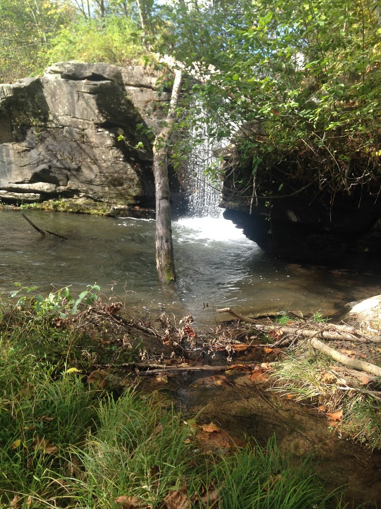
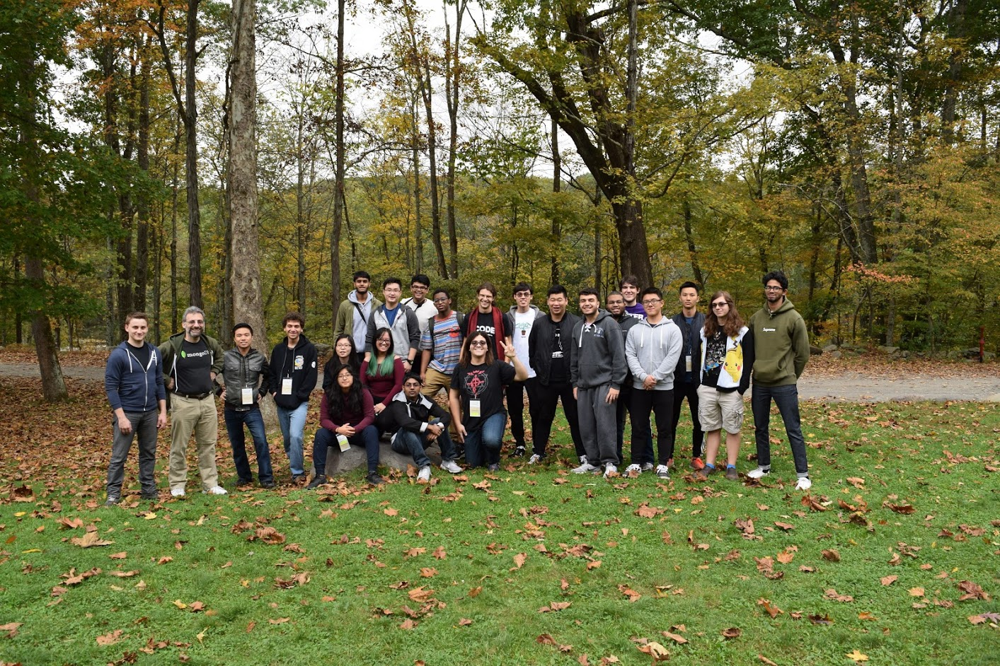
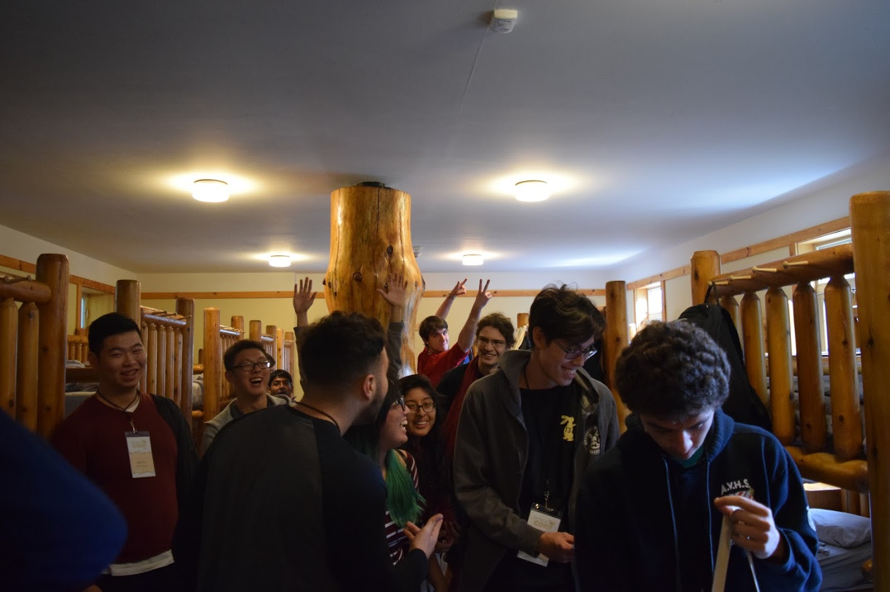
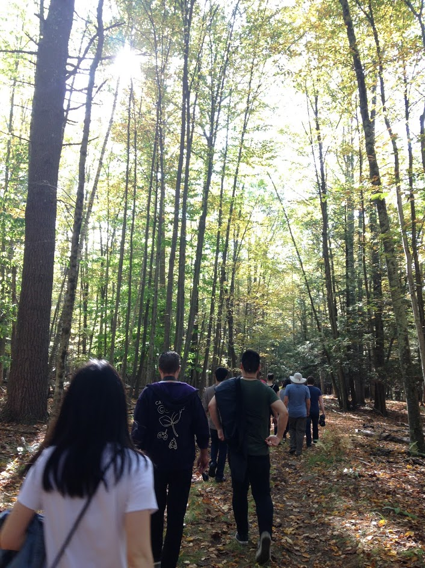
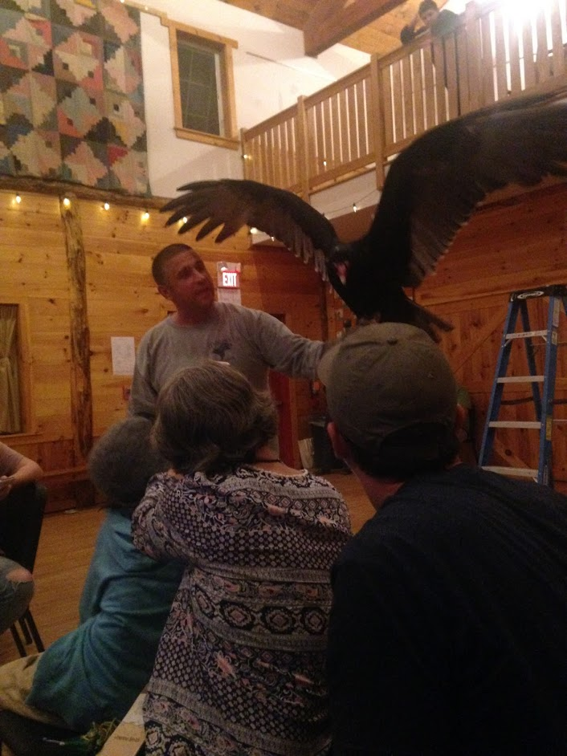

Catskills Conf 2017

Fall in the northeast is a special time. It's the apple harvest, the leaves change colors, and the air is crisp and clean. One of the best places to enjoy it is up in the Hudson Valley. That's why I love going to Catskills Conf each year.
I've written about Catksills Conf before and I usually describe it as "light tech conference meets summer camp." I love the event but I love being able to bring my students even more.
Hunter's a great place but it's a commuter school. That makes it harder for the students to get to know each other than if they all lived in the dorms. Getting away as a group for the weekend helps us jumpstart the process.


Then there's the conference itself. In addition to a great assortment of talks it has all the amazing extras.
Jonathan "Song a Day" Mann has been with us all three years of the conference to write summary songs for each day.
<iframe width="560" height="315" src="https://www.youtube.com/embed/iM2RmmJrBTI" frameborder="0" allowfullscreen></iframe>
There are hikes

Workshops like blacksmithing

a live birds of prey show

not to mention folk music and square dancing.
All of this makes for a great experience but maybe the best part is that everyone is living together in the Ashokan Center. The conference doesn't allow questions after talks because the speakers are all living with the attendees for the weekend. We eat in the same cafeteria, go on the same hikes, relax at the same bonfire, and sleep in the same bunkhouses. As one of my students said:
There’s just something about sharing a conversation on the cloud computing network with someone who’s visiting from London while shooting basketball hoops in the middle of the woods that makes for a real take away experience!
I've had the good fortune to be able to bring my students up to Catskills Conf in the Fall for each of the last three years. Here's hoping that the tradition can continue for many more.
Comments
Comments powered by Disqus